해양공학기사 (2008-05-11 기출문제)
1과목: 해양학개론
1. 북반구에 존재하는 동안류와 서안류에 대한 설명 중 틀린 것은?
- 동안류는 폭이 넓고 서안류는 폭이 좁다.
- 해류층의 두께가 동안류는 얇고 서안류는 두껍다.
- 동안류는 편서풍대에서 흘러오며, 저온, 저염분이고 서안류는 무역풍대에서 흘러오며 고온, 고염분이다.
- 연안류와의 경계가 모두 분명하다.
(정답률: 알수없음)

2. 퇴적물의 평균입도가 동일할 경우, 퇴적물의 분급과 공극률의 관계 중 맞는 것은?
- 분급이 좋을수록 공극률이 작다.
- 분급이 좋을수록 공극률이 크다.
- 분급과 공극률간에는 관계가 없다.
- 평균입도는 분급 및 공극률에 영향을 미치지 않는다.
(정답률: 알수없음)
3. 해수의 온도차발전(OTEC)건설의 일반적인 최적치는?
- 저위도 지역
- 중위도 지역
- 고위도 지역
- 남극지역
(정답률: 알수없음)
4. 지형류란 어떤 힘들이 서로 평형을 이룰 때 나타나는 해류인가?
- 압력경도력과 코리올리힘
- 압력경도력과 바람응력
- 바람응력과 코리올리힘
- 가속력과 코리올리힘
(정답률: 알수없음)
5. 다음 중 열대저기압과 발생지역의 연결이 틀린 것은?
- 태풍(Typhoon) – 북태평양
- 허리케인(Hurricane) - 북대서양
- 사이클론(cyclone) – 북인도양
- 윌리윌리(Willy-Willies) – 지중해
(정답률: 알수없음)
6. 해양의 표층해류 중 서안경계해류(Western boundary current)가 아닌 것은?
- 쿠로시오
- 멕시코만류
- 캘리포니아 해류
- 동 오스트레일리아 해류
(정답률: 알수없음)
7. 다음 중 침강입자를 모으는 용기로서 가장 적합한 것은?
- 세디먼트 트랩(Sesiment trap)
- 밀리포어 필터(Millipore filter)
- 반돈(Van Dorn) 채수기
- 무오염 채수기
(정답률: 알수없음)
8. 해저 열수광상이 가장 많은 해역은?
- 대서양
- 태평양
- 인도양
- 지중해
(정답률: 알수없음)
9. 판구조 운동을 하는 판(plate)의 평균 두께는?
- 100km
- 200km
- 300km
- 400km
(정답률: 알수없음)
10. 해양에서 대기로 발산되는 열 중 가장 큰 것은?
- 증발잠열
- 전도열
- 복사열
- 반사열
(정답률: 알수없음)
11. 북반구에서 열대-아열대 해역의 표층 해수순환 방향은?
- 시계 방향의 회전
- 반시계 방향의 회전
- 남북 방향의 직선
- 동서방향의 직선
(정답률: 알수없음)
12. 생물기원 퇴적물 중 해수에서 직접 침전한 것이 아니라 석회질 퇴적물이 퇴적한 후 속성작용을 받는 동안 Ca이 석회질 퇴적물 혹은 공극수 내에 풍부한 Mg으로 치환되어 생성된 것은?
- Aragonite
- Barite
- Calcite
- Dolomite
(정답률: 알수없음)
13. 다음 원소 중 해수에서 제거되기 쉬운 순서로 바르게 된 것은?
- Mn ＞ U ＞ Na ＞ Th
- Th ＞ Mn ＞ U ＞ Na
- U ＞ Na ＞ Th ＞ Mn
- Na ＞ Th ＞ Mn ＞ U
(정답률: 알수없음)
14. 해안 지형을 분류할 때 육지의 융기 또는 해면의 저하에 의하여 새로운 육지로 형성된 해안은?
- 침수해안
- 이수해안
- 중성해안
- 합성해안
(정답률: 알수없음)
15. 내부파 중에서 기상적인 영향에 의하여 생기는 반일주기의 파는?
- 내부조석파
- 내부관성파
- 자유내부파
- 심층내부파
(정답률: 알수없음)
16. 다음 중 방사성 핵종의 붕괴방정식으로 맞는 것은? (단, A는 시간 t 경과 후 방사능 농도, Ao는 초기의 방사능 농도, λ는 붕괴상수, t는 시간이다.)
- A = Ao × ln(-λt)
- Ao = A × ln(-λt)
- Ao = Ae-λt
- A = Aoe-λt
(정답률: 알수없음)
17. 다음 중 일조부등(日潮不等)의 원인은?
- 달의 위치가 하루 동안 바뀌기 때문이다.
- 태양의 위치가 하루 동안 조금 바뀌기 때문이다.
- 달의 궤도면과 지구의 적도면이 서로 다르기 때문이다.
- 밤과 낮의 기온차이 때문이다.
(정답률: 알수없음)
18. 대양저로부터 융기한 해산 중에서 그 정상이 편평한 지형은?
- 기요
- 산호초
- 해팽
- 해령
(정답률: 알수없음)
19. 에크만 취송류 모델에서 마찰영향심도(frictional depth)는?
- 위도에 관계없으며 풍속이 커지면 증가한다.
- 풍속에 관계없으며 위도가 증가하면 감소한다.
- 같은 풍속이면 위도에 따라 증가한다.
- 풍속이 증가하면 증가하며, 위도가 증가하면 감소한다.
(정답률: 알수없음)
20. 우리나라 주변해의 수괴 중 가장 온도가 낮은 것은?
- 동해고유수
- 황해저층냉수
- 대마난류수
- 북한한류수
(정답률: 알수없음)
2과목: 해양수리학
21. 다음의 파고자료를 이용하여 H1/3을 계산한 값은?
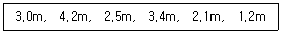
- 5.5m
- 3.2m
- 2.6m
- 3.8m
(정답률: 알수없음)
22. 조석의 조화분해에 대한 설명으로 틀린 것은?
- 조석현상을 구성하는 각각의 규칙적인 조석으로 분리하는 것을 조화분석이라 한다.
- 조석의 조화분해시 반드시 부진동을 포함시키도록 한다.
- 조석의 조화분해는 고조의 매시 관측지를 사용한다.
- 최초시작시간(기원시)은 자정으로 하는 것이 좋다.
(정답률: 알수없음)
23. 소구경의 수중 부재에 작용하는 파력의 특성을 설명한 내용 중 맞지 않는 것은?
- 구조물의 구경이 작아지면 관성력이 탁월해진다.
- 항력계수, 관성력계수, 양력계수는 레이놀드수와 K-C수에 의해 변한다.
- 불규칙 파력의 통계적 성질과 구조물의 응답을 조사하여 최대 파력의 기대치를 구한다.
- 다부재(多部材)구조물에 작용하는 전파력 계산에는 파력의 위상차를 고려한다.
(정답률: 알수없음)
24. 원주 주위의 흐름과 Re수(Reynolds number)와의 관계 설명 중 틀린 것은?
- Re수가 1.0 이하일 때는 층류적 흐름으로 원주를 따라 흐란다.
- Re수가 약 5 이상이면 원주 배후에 작은 소용돌이가 발생된다.
- Re수가 40~50 정도이면 Karman의 와열현상이 나타난다.
- Re수가 감소할수록 Karman의 와열은 불안정해진다.
(정답률: 알수없음)
25. 다음 중 배조(培潮 : Overtide)의 설명으로 올바른 것은?
- 조석이 천해역으로 진행할 때 조석파의 비선형성에 의해 조석의 2배, 3배 등의 각속도를 갖는 분조가 발생한다.
- 각속도가 다른 2개의 조석파가 만날 때 두 분조의 각속도의 합 또는 차의 각속도를 갖는 분조가 발생한다.
- 기상상태의 변화 중 규칙적인 요인은 해면의 규칙적인 변화를 일으키며 이에 의해 조석의 크기가 변하게 된다.
- 천체의 운동에 발생하는 M2, S2 등 주요 분조의 위상이 일치되는 경우 조석의 크기가 보통보다 커진다.
(정답률: 알수없음)
26. 어느 항만의 조위분석 결과 4개 분조의 진폭이 아래와 같았다. 이 항만의 평균소조차는 약 얼마인가?
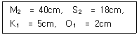
- 13cm
- 22cm
- 44cm
- 51cm
(정답률: 알수없음)
27. 해빈변형에 영향을 미치는 낙하시간변수(fall time parameter)의 설명 중 틀린 것은?
- 중앙직경 표사 입자의 최종 침강속도에 비례한다.
- 파랑의 주기에 반비례한다.
- 1보다 작으면 표사의 퇴적이 발생한다.
- 2보다 크면 표사의 침식이 발생한다.
(정답률: 알수없음)
28. 조류의 형태에 대한 설명 중 틀린 것은?
- 창조류와 낙조류로 구분되며, 그 방향이 반대인 경우 왕복성 조류라고 한다.
- 왕복성 조류는 좁은 해협이나, 만·수도에서, 회전성조류는 외해에서 주로 나타난다.
- 조류에는 일조부등이 나타나지 않는다.
- 조류의 유향과 유속이 타원형을 이루면서 회전하는 경우 이를 회전성 조류라 한다.
(정답률: 알수없음)
29. 다음 중 운동학적 상사조건에 포함되지 않는 것은?
- 길이
- 면적
- 속도
- 질량
(정답률: 알수없음)
30. 풍파에 의한 연안류의 설명이 아닌 것은?
- 연안에 비스듬히 입사하는 파의 반사응력이 주된 발생요인이다.
- edge wave의 정상파 효과에 의해 발생한다.
- 연안에 따른 쇄파고의 분포와 관련이 있다.
- 파고가 높은 해빈에서 낮은 해빈 쪽으로 흐른다.
(정답률: 알수없음)
31. 해얀지형의 변형특성과 해빈단면 형상에 관한 정성적인 설명 중 맞는 것은?
- 사주(bar)형 해빈 – 퇴적형
- 계단(step)형 해빈 – 침식형
- 사주(bar)형 해빈 – 천이형
- 계단(step)형 해빈 – 퇴적형
(정답률: 알수없음)
32. 물의 물맂거 성질을 나타내는 것으로 그 차원이 틀린 것은? (단, ρ는 밀도, w는 단위중량, μ는 점성계수, F는 힘)
- ρ = ML-3
- w = L-2 MT-2
- ρg = FL-3
- μ = L2 T-2
(정답률: 알수없음)
33. 북반구에 위치한 해안선이 남북으로 발달한 해안에서 북풍이 불 경우에 다음 중 해안에서 발생하는 해류의 양상은?
- 표층과 저층 모두 바람과 같은 방향의 해류가 발생
- 표층은 바람과 같은 방향의 해류가, 저층은 바람과 반대 방향의 해류가 발생
- 표층에서는 외해 쪽으로, 저층에서는 해안 쪽으로 해류가 발생
- 표층에서는 해안 쪽으로, 저층에서는 외해 쪽으로 해류가 발생
(정답률: 알수없음)
34. 관성력과 점성력의 상대적인 비를 나타내는 무차원 계수는?
- Euler Number
- Froude Number
- Weber Number
- Reynolds Number
(정답률: 알수없음)
35. 다음 중 규칙파의 이론 및 모델과 관련이 가장 먼 것은?
- Stokes wave
- Solitary wave
- Significant wave
- Cnoidal wave
(정답률: 알수없음)
36. 수중 말뚝을 지나는 흐름이 부정류(unsteady flow)일 때 물체에 작용하는 주요한 힘이 아닌 것은?
- 수중 말뚝으로 인해 운동하는 유체에 부가되는 유체질량(부가질fidd)을 가속시키기 위한 힘
- 수중 말뚝과 유체 사이의 상호 운동 속에서 수중말뚝이 유체에 의해 받는 힘
- 수중 말뚝에 작용하는 부력에 의한 힘
- 수중 말뚝에 작용하는 압력 경사에 의한 힘
(정답률: 알수없음)
37. 반일주조가 우세한 하구폭이 300m, 평균수심이 15m, 하구입구의 조류에 의한 최대유속이 1.5m/sec인 하구의 조석프리즘(조량)은?
- 2.4×107 m3
- 4.8×107 m3
- 9.6×107 m3
- 1.9×107 m3
(정답률: 알수없음)
38. 바다에서 발생하는 파랑은 그 발생원인, 수심 및 현상 등에 따라 여러 가지 명칭으로 구분할 수 있다. 다음에서 현상상의 구분이 아닌 것은?
- 진행파
- 쇄파
- 너울(swell)
- 중복파
(정답률: 알수없음)
39. 해안의 구성원인에 의한 분류에 해당하지 않는 것은?
- 침강해안
- 융기해안
- 결괴해안
- 합성해안
(정답률: 알수없음)
40. 보통중력파의 주기는 대체로 얼마 정도인가?
- 0.1초 이하
- 0.1 ~ 1.0초
- 1 ~ 30초
- 30초 ~ 1분
(정답률: 알수없음)
3과목: 해양구조공학
41. 돌제의 기능 및 배치에 관한 설명으로 옳은 것은?
- 연안표사 및 파랑의 제어를 위한 구조형식이다.
- 연안표사를 차단하도록 정선에서 쇄파점까지 설치한다.
- 돌제의 간격은 돌제 길이의 1~3배로 한다.
- 돌제방향은 파랑의 진행방향과 같게 한다.
(정답률: 알수없음)
42. 다음과 같은 구조물의 B점에 M의 모멘트가 작용할 때 분배모멘트 MBA와 MBC의 비는?
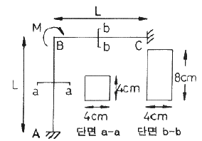
- 4 : 1
- 1 : 4
- 8 : 1
- 1 : 8
(정답률: 알수없음)
43. 다음 중 콘크리트 해양구조물의 장점이 아닌 것은?
- 승무원과 시설에 안전성이 크다.
- 철구조물에 비해 초기건조비가 싸다.
- 수중부의 유지보수비가 싸다.
- 철제 riser들의 충격과 부식방지가 가능하다.
(정답률: 알수없음)
44. 사석구조물 등과 같은 경사식 해안구조물의 장점에 관한 설명으로 옳은 것은?
- 반사 파고가 크다.
- 연약 지반에도 건설할 수 있다.
- 투과파를 허용한다.
- 이용 가능한 해역면적이 크다.
(정답률: 알수없음)
45. Euler의 공식에서 좌굴하중을 Pb = n2 π2 EI/ℓ2 으로 구한다면 부재의 지지상태에 의한 정수 n2의 값 중 틀린 것은?
- 양단 힌지 : 1
- 1단 고정, 타단 힌지 : 2
- 양단 고정 : 4
- 1단 고정, 타단 자유 : 1/2
(정답률: 알수없음)
46. 그림과 같이 두께가 서로 다른 전단면용입 groove 용접에서 용접부의 목두께는?
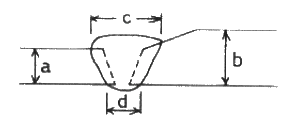
- a
- b
- c
- d
(정답률: 알수없음)
47. 그림과 같은 단면의 x-x축에 대한 회전반경의 크기는?
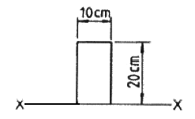
- 5.8cm
- 11.5cm
- 33.3cm
- 57.4cm
(정답률: 알수없음)
48. 다음의 설명 중 연안역의 도류제에 관한 사항은?
- 해안정선에서 해안에 거의 직각으로 설치한다.
- 연안에 연한 흐름이나 파도에 의한 표사 이동을 저지한다.
- 방파제로 표사의 하류측 이동을 저지한다.
- 조석류를 주로 규제하는 수심 유지를 위한 것이다.
(정답률: 알수없음)
49. 쇄파대에 설치된 연직 방파제에 작용하는 파압은? (단, 파고는 2m, 수심은 3m, 천단고는 2.5m, 해수비중은 1.03 이다.)
- 7.7t
- 11.3t
- 17.0t
- 22.5t
(정답률: 알수없음)
50. 다음 그림과 같은 구조물의 부정정차수는?
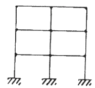
- 6차
- 12차
- 18차
- 22차
(정답률: 알수없음)
51. 부두의 평면 형식 중 조차가 큰 항에서 적합한 형식은?
- 돌제식
- 박거식
- 섬식
- 평행식
(정답률: 알수없음)
52. 소구경 주상(柱狀)구조물에 작용하는 파력의 특성에 관한 다음 설명 중 옳은 것은?
- Morison 공식으로 파력계산이 가능하며 여기에는 항력, 관성력, 충격력이 포함되지 않는다.
- Morison식의 계수 CD, CM은 항력과 관성력의 위상차를 이용하여 실험적으로 구하며, K-C수의 영향은 받지 않는다.
- Morison식의 CD, CM은 각주보다 원주의 경우가 큰 값을 가진다.
- 항력, 관성력, 양력, 쇄파충격력 등이 작용하며, 레이놀드수 및 K-C수에 따라 성분력이 변한다.
(정답률: 알수없음)
53. 그림과 같은 트러스에서 부재력이 0(zero)가 되는 것은?
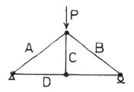
- A
- B
- C
- D
(정답률: 알수없음)
54. 다음 중 방파제의 배치 시 고려해야 하는 사항이 아닌 것은?
- 항내 출입구는 출입에 지장이 없는 한 폭을 작게 한다.
- 항내에서 입사파가 최초로 부딪히는 부분은 파가 완전히 반사되어 나가도록 직립제를 설치한다.
- 방파제의 경사면을 지반이 약한 곳, 너무 깊은 곳, 시공이 곤란한 곳은 피한다.
- 항내로 진입한 입사파가 충분히 확산되도록 항내수역은 가능한 크게 한다.
(정답률: 알수없음)
55. 다음과 같은 구조물의 A점에서의 반력은?
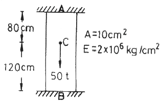
- 15.4t
- 20.0t
- 30.0t
- 34.6
(정답률: 알수없음)
56. 다음과 같은 직육면체 물체를 바닥에서 떨어지게 하는 최소 수심(h)은? (단, 물체의 단위중량은 0.7 t/m3 이고, 물의 단위중량은 1 t/m3이다.)
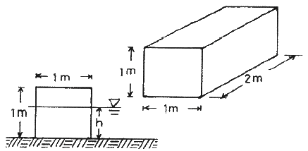
- 0.35m
- 0.7m
- 1.⑤m
- 1.4m
(정답률: 알수없음)
57. 소파공(消波工)이 유효한 작용을 하기 위한 조건이 아닌 것은?
- 표면조도가 클 것
- 간극률이 클 것
- 충분한 마루폭과 마루높이가 있을 것
- 침하 및 붕괴를 초래하지 않을 것
(정답률: 알수없음)
58. 그림과 같은 구조물에서 A점에서의 수직반력의 크기는?
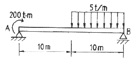
- 2.5t
- 5.0t
- 7.5t
- 10.0t
(정답률: 알수없음)
59. 그림과 같은 분포하중을 받는 양단고정보에서 고정모멘트는?
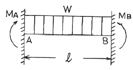
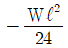
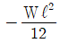
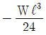
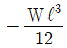
(정답률: 알수없음)
60. 다음과 같은 장주 A가 견딜 수 있는 최대압축력의 크기가 100t이라 할 때 같은 단면을 가진 장주 B가 견딜 수 있는 압축력의 크기는?
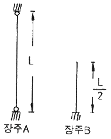
- 50t
- 100t
- 200t
- 400t
(정답률: 알수없음)
4과목: 측량학
61. 다음 중 해저 지질 측량의 직접조사방법에 속하지 않는 것은?
- 예인에 의한 방법
- 시추공에 의한 방법
- 투연에 의한 방법
- 중력측량에 의한 방법
(정답률: 알수없음)
62. 해저의 부니층 조사시 생략할 수 있는 부니층의 두께 기준은?
- 20cm 이하
- 30cm 이하
- 40cm 이하
- 50cm 이하
(정답률: 알수없음)
63. 해도 제작을 위한 측량 원도에 기입할 사항이 아닌 것은?
- 자오선, 격자, 도곽선
- 철거 침몰선, 장애물 위치
- 해안선, 노암, 간출암
- 수심, 저질, 등심선
(정답률: 알수없음)
64. 음향측심기의 송파기에서 발사된 음파가 6초 후에 수파기로 반사음이 돌아왔다면 수심은?
- 15,000m
- 9,000m
- 4,500m
- 3,000m
(정답률: 알수없음)
65. 해저지질조사에서 입도 분석을 하는 방법이 아닌 것은?
- 전자기파관측법
- 체가름 분류법
- 침강법
- 현미경법
(정답률: 알수없음)
66. DOP(dilution of precision)에 대한 설명으로 틀린 것은?
- 수평, 수직, 시간 및 위치에 대한 정밀도 저하율이 발생한다.
- DOP 수치와 측량의 정도와는 무관하다.
- DOP 수치가 적을수록 측량성과의 정밀도가 좋다.
- DOP는 위성의 배치상태에 따라 변화한다.
(정답률: 알수없음)
67. 육분의(Sextant) 취급시 유의 사항이 아닌 것은?
- 기계를 잡을 때는 호 또는 거울 등은 잡지말 것
- 조정나사에 함부로 손대지 말 것
- 수평각 관측시 고도가 다른 목표는 관측하지 말 것
- 관측각을 읽을 때는 호의 직상에서 읽을 것
(정답률: 알수없음)
68. 다음 중 평균 해수면을 육지까지 연장하여 지구 전체를 둘러쌓은 가상 곡선은?
- 모유선
- 지오이드
- 측지선
- 항정선
(정답률: 알수없음)
69. 지오이드의 특징으로 틀린 것은?
- 지오이드는 불규칙한 폐곡면의 등포텐셜면(equal-potential surface)이다.
- 지구의 중력장과 회전축을 중심으로 회전에 의한 포텐셜이 같은 면이다.
- 지오이드면이 타원체면보다 높은 지역에서는 곡률반경이 길다.
- 어느 지점에서나 표면을 관통하는 수직선은 중력의 방향과 같다.
(정답률: 알수없음)
70. 해양측량의 종류가 아닌 것은?
- 보정측량
- 항만측량
- 소해측량
- 다각측량
(정답률: 알수없음)
71. 다음 중 해저지질의 미세구조, 지층, 단층 상황을 판별하는데 가장 적합한 방식은?
- 중력탐사
- 지자기탐사
- 지전류탐사
- 음파탐사
(정답률: 알수없음)
72. GPS 코드에서 신호를 측정할 때 위성이 지상에 접근할 경우 수신된 신호가 위성에서 송신된 신호의 주파수보다 커지는 현상은 무엇에 의한 것인가?
- 호이겐스의 원리
- 캐플러 법칙
- 광행차 현상
- 도플러 효과
(정답률: 알수없음)
73. 다음 측량기기 중 거리와 각을 동시 관측하여 연산식에 의하여 좌표를 산출할 수 있는 기기는?
- 트랜싯트
- EDM
- 자동레벨
- 토탈스테이션
(정답률: 알수없음)
74. 해도 작성 시 수심측량 기준면은 다음 중 어느 것과 일치시켜야 하는가?
- 약 최고고조면
- 대조 평균 고조면
- 평균 해수면
- 해도 기준면
(정답률: 알수없음)
75. 항공사진의 특수 3점은?
- 주점, 상점, 표정점
- 연직점, 수준점, 기준점
- 주점, 등각점, 연직점
- 주점, 부점, 등각점
(정답률: 알수없음)
76. 다음 중 바다의 기본도 축척에 속하지 않는 것은?
- 1 : 15,000
- 1 : 200,000
- 1 : 50,000
- 1 : 10,000
(정답률: 알수없음)
77. 표정점(기준점)의 선점에서 유의해야 할 사항이 아닌 것은?
- 사진의 가장자리에서 1cm 이상 떨어져서 나타나는 점을 택한다.
- 표정점은 지표면에서 기준이 되는 높이의 점이어야 한다.
- 경사가 급한 지표면이나 경사 변환선상을 택할 수 있다.
- 헐레이션(Halation)이 발생하기 쉬운 점은 안된다.
(정답률: 알수없음)
78. 평판을 세우기 위해 만족해야 할 것이 아닌 것은?
- 기계를 수평으로 하는 작업
- 평판상의 점과 지상의 점을 일치시킴
- 기계의 방향을 정함
- 시준판을 저면에 정확하게 지각시킴
(정답률: 알수없음)
79. GPS위성의 신호에 대한 설명으로 틀린 것은?
- 반송파 L2에서는 P코드만 변조할 수 있다.
- C/A코드와 P코드는 반송파의 90° 주기변화에 의한 다중위상변조기법에 의해 생성된다.
- P코드는 주파수 10.23 MHz, 파장이 30m 이다.
- 반송파 L1에서는 C/A코드와 P코드를 변조할 수 있다.
(정답률: 알수없음)
80. 실측법에 의한 해안선 측량에서 보조점 관측방법이 아닌 것은?
- 전방교회법
- 후방교회법
- 전진법
- 직선일각법
(정답률: 알수없음)
5과목: 재료공학
81. 철근 콘크리트의 건축수축에 관한 사항 중 틀린 것은?
- 철근이 많이 사용된 콘크리트 구조물에서는 콘크리트의 수축이 크게 일어난다.
- 수중구조물은 수축이 거의 없고 아주 습한 대기중에 있는 구조물에는 건조수축이 적게 일어난다.
- 부정정구조의 설계에 쓰이는 건조수축변형률은 라멘구조에서는 0.00015 이다.
- Arch에서 건조수축변형률은 철근량이 0.5% 이상에서 0.00015, 0.1 ~ 0.5%에서는 0.0002로 본다.
(정답률: 알수없음)
82. 일반 수중콘크리트의 물-시멘트비 기준은?
- 60% 이하
- 55% 이하
- 50% 이하
- 45% 이하
(정답률: 알수없음)
83. 금속의 부식을 방지하는 방법 중 틀린 것은?
- 재료의 표면에 요철(
 ) 을 두어 거칠게 만드는 방법
) 을 두어 거칠게 만드는 방법 - 도금을 하여 표면에 피막을 생성시키는 방법
- 양극과 음극의 전기를 통과시켜 장기간 부식을 방지하는 방법
- 표면에 페인트나 아스팔트, 콜타르 등을 도포하는 방법
(정답률: 알수없음)
84. 체적 변형율은 길이 변형율의 약 몇 배인가?
- 1배
- 2배
- 3배
- 4배
(정답률: 알수없음)
85. 응력 상태가 반복되는 경우 정적하중 하에서의 최후 강도보다 낮은 응력에서 그 재료의 파괴가 일어난다. 이러한 파괴를 무엇이라 하는가?
- 연성파괴
- 취성파괴
- 피로파괴
- 전단파괴
(정답률: 알수없음)
86. 레디믹스트(ready-mixed) 콘크리트를 구입할 때 구입자와 생산자가 협의하지 않고 구입자가 일방적으로 지정하는 사항은?
- 시멘트와 골재의 종류
- 호칭강도와 슬럼프의 조합
- 굵은 골재와 최대치수와 알칼리 골재 반응억제 방법
- 경량 콘크리트의 경우는 콘크리트의 단위 용적 질량
(정답률: 알수없음)
87. 콘크리트 속에 묻힌 철근이 콘크리트와 일체가 되어 외력에 저항할 수 있는 이유가 아닌 것은?
- 철근과 콘크리트는 탄성계수가 거의 같다.
- 콘크리트가 철근의 부식을 억제한다.
- 콘크리트와 강재는 열팽창계수가 거의 같다.
- 철근과 콘크리트 사이의 부착강도가 크다.
(정답률: 알수없음)
88. 탄성계수 E, 포와송비 ν 및 전단탄성계수 G의 관계식을 올바르게 나타낸 것은?
- E = G(1+ν)
- E = G(1+2ν)
- E = 2G(1+ν)
- E = 2G(1+2ν)
(정답률: 알수없음)
89. 해양구조물에서 강구조물 용접 이음부의 검사법이 아닌 것은?
- 슈미트해머에 의한 반발 경도 시험
- 침투탐상시험
- 초음파탐상시험
- 방사선투과시험
(정답률: 알수없음)
90. 다음 중 용어의 설명이 틀린 것은?
- 인성 – 재료가 응력을 잘 견디면서 많은 변형을 하는 성질
- 전성 – 재료를 긁을 때 자국, 절단, 마모 등에 저항하는 성질
- 연성 – 재료가 인장력을 받아 잘 늘어나는 성질
- 취성 – 재료가 작은 변형에도 쉽게 파괴되는 성질
(정답률: 알수없음)
91. 철근부식 억제 방안이 아닌 것은?
- 물-시멘트비를 작게 한다.
- 염화물이 함유된 골재를 사용한다.
- 수밀콘크리트로 시공한다.
- 충분한 피복두께를 확보한다.
(정답률: 알수없음)
92. 다음 매스콘크리트에 대한 설명 중 잘못된 것은?
- 매스콘크리트란 댐 등과 같이 부피가 큰 콘크리트를 말한다.
- 단위 시멘트량은 소요의 워커빌리티 및 강도가 얻어지는 범위 내에서 되도록 크게 정해야 한다.
- 매스콘크리트에서는 저열 및 중용열포틀랜드시멘트 등의 저발열시멘트를 사용하는 것이 바람직하다.
- 콘크리트를 친 후 표면에 급격한 온도변화 및 건조가 일어나지 않도록 보호해야 한다.
(정답률: 알수없음)
93. 일반적인 수중콘크리트에 관한 설명 중 틀린 것은?
- 수중콘크리트의 슬럼프치는 50~80mm의 된반죽으로 해야 한다.
- 완전히 물막이를 할 수 없는 경우에도 유속은 1초간 50mm 이하로 하는 것이 좋다.
- 콘크리트는 수중에서 낙하시켜서는 안된다.
- 단위 시멘트량은 370 kg/m3 이상을 표준으로 한다.
(정답률: 알수없음)
94. 강철재 녹방지용 페인트에 대한 성질 중 틀린 것은?
- 습기에 대해서 침투성이어야 한다.
- 될 수 있는 한 공기를 투과시키지 않아야 한다.
- 강철재에 화학적 작용이 미치지 않아야 한다.
- 충분한 탄력성이 있으며 견고도가 크고 마찰 충격 등에 감당할 수 있어야 한다.
(정답률: 알수없음)
95. 해양에 서식하는 생물 중에는 탄산암모늄, 황화수소, 강산성물질 등의 화학물질을 생산하여 콘크리트에 손상을 주는 것이 있다. 이와 같은 충류, 균류 등의 작용에 대해 저항하는 재료의 성질은?
- 내침식성
- 내후성
- 내화학약품성
- 내생물성
(정답률: 알수없음)
96. 콘크리트의 배합 시 작업이 가능한 범위 내에서 가급적 작은 값을 택하여야 할 항목은?
- 굵은 골재의 최대치수
- 단위수량
- 배합강도
- AE공기량
(정답률: 알수없음)
97. 바우싱거 효과에 대한 설명 중 알맞은 것은?
- 길이를 일정하게 유지하고 있어도 인장력이 더 증가하는 것을 말한다.
- 역방향의 하중을 가하면 전과 같은 방향으로 하중을 가한 경우보다도 소성변형에 대한 저항이 감소하는 것을 말한다.
- 시간과 함께 부분적으로 원래의 상태로 되돌아오려고 하는 성질을 말한다.
- 재료가 일정한 하중을 받고 있을 때 변형이 계속 증가하는 현상을 말한다.
(정답률: 알수없음)
98. 다음 금속 중 탄성계수 값이 가장 큰 것은?
- Pb
- Al
- Cu
- Fe
(정답률: 알수없음)
99. 콘크리트 공시체 제작시 압축강도용 공시체는 ø150×300mm를 기준으로 하고 있다. 이 때 ø100×200mm의 공시체를 사용할 경우 강도 보정계수는?
- 0.90
- 0.92
- 0.95
- 0.97
(정답률: 알수없음)
100. 전단 탄성계수(G)는?
- 전단응력/전단변형률
- 전단변형률/전단응력
- 전단응력/수직응력
- 수직응력/전단응력
(정답률: 알수없음)